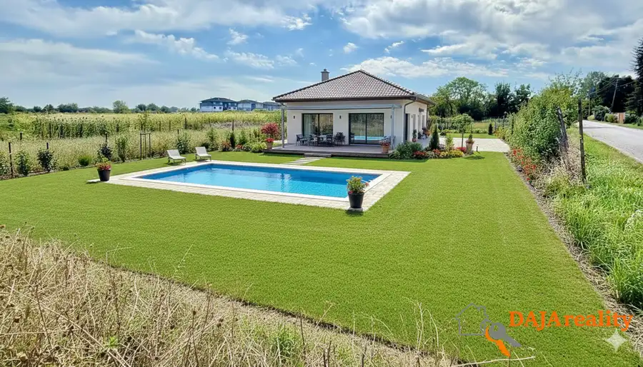
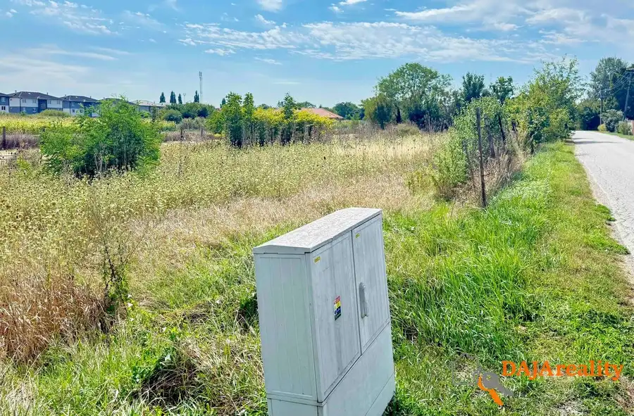
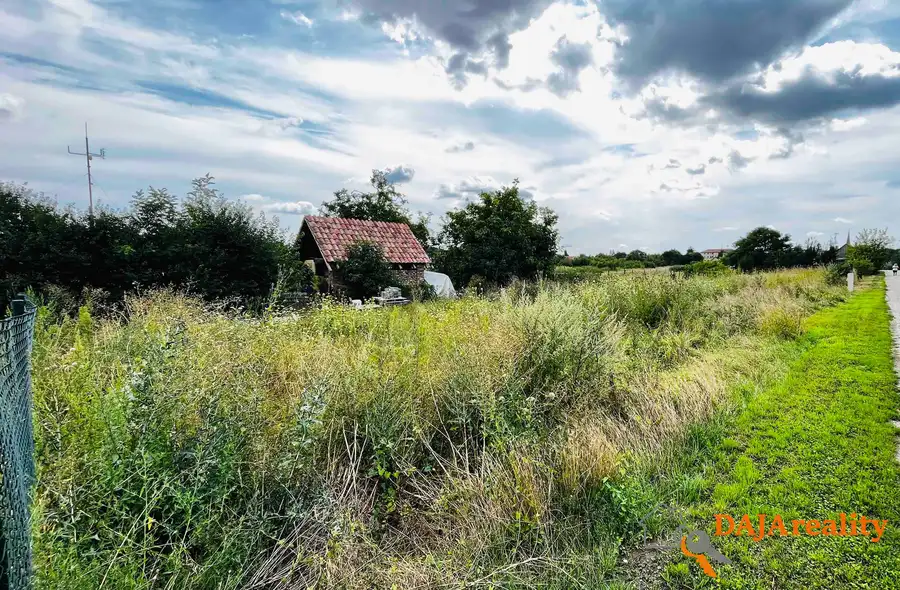
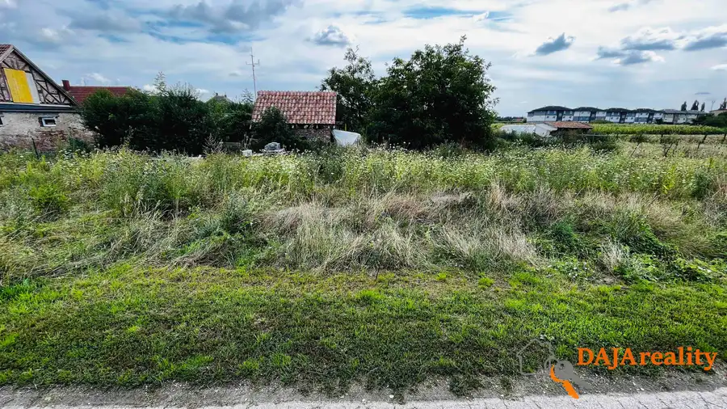
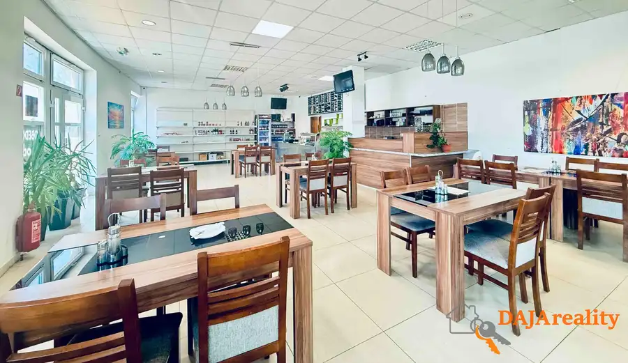
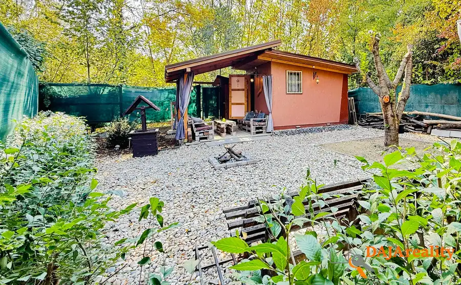
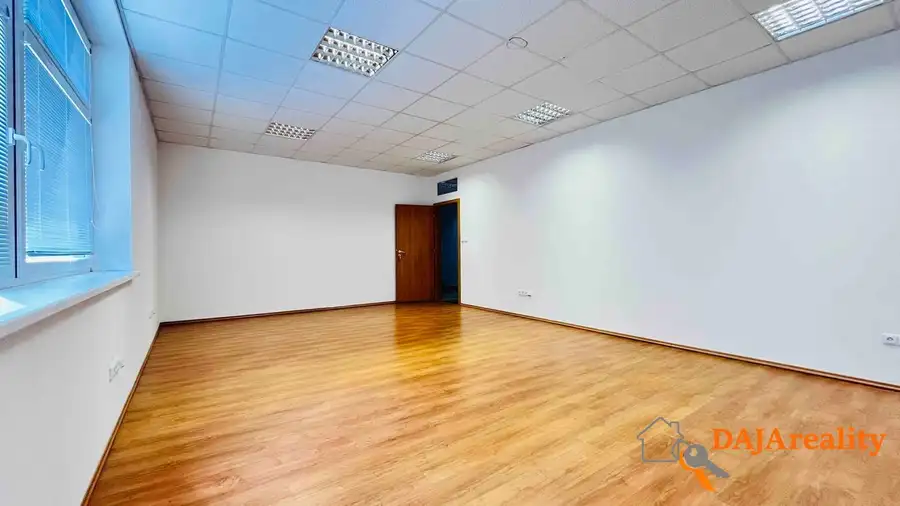

Stavebný pozemok v obci Žihárec.
Žihárec




- Plocha512 m²
O nehnuteľnosti
Ponúkame na predaj stavebný pozemok, na výstavbu rodinného domu v zastavanej časti obce Žihárec, s ideálnou rozlohou 512m2, rozmery (š 28,5m x d 18m).Prvé dve fotky sú ilustračné, pre lepšiu predstavu ako by mohol vyzerať váš vysnívaný rodinný dom na ponúkanom pozemku. Pozemok pre Vás už máme, rodinným domom a bazénom sa môžete nechať inšpirovať.Pre lepšiu predstavu si pozrite video : https://youtu.be/yNx8qtsJJAYPozemok je rovinatý, s prístupovou cestou priamo z obecnej ulice. K pozemku bol už v minulosti vypracovaný projekt rodinného domu, ktorý je možné použiť, alebo si ho nechať upraviť podla osobitných požiadaviek nového vlastníka. Rodinný dom, podľa projektu je už postavený a obývaný na vedľajšom pozemku a je možné si ho fyzicky obhliadnuť a tak zistiť či by Vám vyhovoval ešte pred samotnou výstavbou.IS prípojky sa nachádzajú v tesnej blízkosti pozemku (voda, plyn, elektrika, kanalizácia), s možnosťou pripojenia.Benefity pozemku sú:- tichá a kludná lokalita- rozloha a poloha pozemku- vyhladávaná časť obce- blízká dostupnosť do centra obce a okolitých okr. miest SA, GA, KN- v okolí nehnuteňosti sú jazierka a dostatok zelene- dve prístupové cesty k pozemku- projekt rodinného domu- všetky IS v tesnej blízskostiObec Žihárec má dobrú občiansku vybavenosť, základná škola, materská škôlka, praktický lekár, supermarket, autobusová a železničná zastávka, vzdialenosť od okresného mesta Šaľa 13km, Galanta 20km.Nehnuteľnosť je kúpou okamžite k dispozícii.V prípade potreby vám zabezpečíme znalecký posudok a najvýhodnejšie financovanie prostredníctvom banky.Kontakt: Jozef Boženík, tel: 0948 636 900, email: jozef.bozenik@icloud.com, web: www.dajareality.sk
Parametre
- Druh
- Pozemok pre rodinné domy
- Dátum zverejnenia
- 05. 12. 2023
- Dĺžka pozemku
- 18
- Elektrina
- Pri pozemku - 230 V
- Funkčné využitie
- Výstavba rodinného domu
- Odpadové vody
- Pri pozemku - Kanalizácia
- Plocha pozemku
- 512 m²
- Plyn
- Na pozemku
- Pripravenosť k výstavbe
- Schválené v územnom pláne
- Prístupová komunikácia
- Asfaltová
- Terén pozemku
- Rovinatý
- Typ
- Predaj
- Voda
- Pri pozemku - Verejný vodovod
- Územie
- Intravilán
- Šírka pozemku
- 28.5
Kde to je


Mohlo by Vás zaujímať

Komerčné priestoryNové 1 400 €Ponúkame na prenájom, obchodný priestor v Šali - Veči, pri Tescu. Šaľa 160 m²
Záhradná chatkaNové 44 990 €Ponúkame na predaj Chatu so záhradou v Šali pri rieke Váh. Šaľa 18.5 m²
Komerčné priestoryNové Cena na vyžádáníPonúkame na prenájom kanceláriu v Šali-Veči oproti supermarketu Tesco Šaľa 25 m²